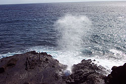
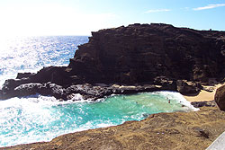
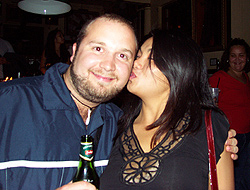
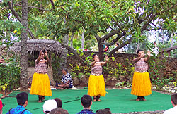
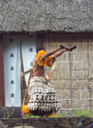
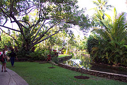
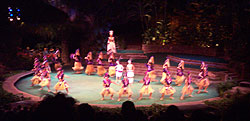
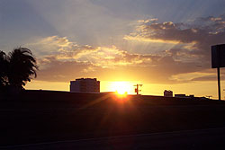

| 1er Janvier 2003. Partie 5. Bienvenue dans ce nouvel épisode de mes aventures Hawaiiennes! On fait tellement de choses chaque jour, je ne sais trop par ou commencer! Bon, si je me fie au dernier récit, on étais samedi, donc dimanche, finalement les femmes ne sont pas allées magasiner mais nous sommes plutôt allés visiter la partie Est de l'île d'Oahu. Nous avons commencé par longer l'océan et nous nous sommes arretés sur le bord d'une petite plage pour prendre quelque photos et voir un phénomène intéressant; un trou dans les rochers, au-dessus de l'eau, laissait les vagues se fracasser en dessous et éclabousser au travers du trou vers le haut. Ca ressemble à un Geyser mais ce n'en est pas un. Stéphanie nous racontait qu'un gars a eu le culot de se placer au-dessus du trou, mais il en a payé le prix, il a revolé 20 pieds dans les airs et a retombé directement dans le trou. Il est mort, bien entendu. Parlant de mort, j'ai pensé faire de la chute libre en parachute car Steph nous avais dit que Matt, son copain, allait sûrement aller en faire en janvier. Mais je crois que j'ai changé d'idée puisque la semaine passée y'a deux personnes qui ont sautés et leur parachute ne s'est pas ouvert. Ca me donne des frissons dans le dos. Mais reste que l'expérience doit être assez intense. Stephanie l'a fait et elle dit que du haut du ciel, on peut voir toute l'île au complet, toute petite, et on atterit dessus. Wow. J'y repenserai, mais le cas de la semaine passée ne me donne pas le goût du tout!! Je sais pas si Matt a encore le goût d'y aller, anyway. Oh, il y a une coquerelle sur le mur, quelqu'un a faim? Bon, revenons à nos moutons. Nous sommes donc ensuite allés marcher sur une assez haute colline afin d'observer les baleines au large. Pas chanceux, les baleines se sont tenues tranquilles :( Nous sommes ensuite redescendus et avons visité un temple bouddhiste japonais dans les montagnes. Une réplique d'un temple au japon vieux de 900 ans. C'était vraiment beau. Il y avait un petit jardin tout autour avec de l'eau et des poissons, canards et tortues qui cohabitaient joyeusement ensemble. Le gros problème de cette journée c'est que j'avais oublié de fermer ma caméra avant de me coucher et la batterie était complètement vidée de son énergie. Je n'avais vraiment pas besoin de cela devant un aussi beau paysage. Le temple avec les montagnes derrière, et l'eau tout autour et toute la vie à l'intérieur. Sans oublier le Bouddha géant recouvert d'or à l'intérieur. J'étais, excusez l'expression, vraiment en criss, puisque je ne pouvais prendre aucune photo. Même chose quand on était sur le toit de cette colline à baleines, la vue était époustouflante, mais je n'ai pu prendre de photos. Ok, pas de caméra, pas grave, du moins j'ai mes yeux pour regarder. Par la suite nous nous sommes dirigés vers "coconut island", qui se trouve à être une île scientifique appartenant à l'université de Stéphanie. Il n'y a que des installations scientifiques et des bassins d'eau dans lesquels ils font des expériences diverses sur les poissons. Vaut mieux ne pas en savoir plus. Surtout en ce qui a trait aux dauphins. Ils ont un tout petit enclos dans l'eau tout près de l'île, et personne n'a le droit de s'y rendre sauf quelques scientifiques importants. Personne ne veut savoir se qui s'y passe, car on serait sûrement choqués de l'apprendre. Pauvres dauphins. Nous avons pu par contre observer les requins dans les bassins sur l'île. Il y avait plusieurs espèces et la plupart étaient assez petits mais il y en avait quelques-uns assez impressionnants. Le plus intéressant était sans doute le requin-tigre qui est plus rare à observer et extrêmement dangereux, même si les requins-marteaux sont aussi drôles à voir aller. Parlant d'eux nous en avons vu un petit échoué sur la plage près de l'endroit ou Stéphanie va souvent faire du snorkling. J'avais envie de lui arracher les dents pour les garder en souvenir mais c'était un peu dégueulasse comme manipulation. Stéphanie nous a ensuite amenés faire une ballade en bateau, c'était chouette mais un peu épeurant car le vent et les vagues étaient assez fortes cette journée-là. Le soir venu nous sommes allés voir le groupe "Pepper" au Hard Rock café, comme prévu. Ils sont très populaires ici, c'est un des groupes hawaiiens les plus populaires. Le show laissait un peu à désirer car le son était plutôt médiocre et ils avaient l'air gelés ben dur. Ils n'ont fait que dire des conneries tout le long. Bah, peu importe, de mon côté je me suis encore une fois amusé à mater les gonzesses, car comme d'habitude, y'en avait pas mal trop dans la place! :) J'ai facilement convaincu une des plus jolies de jouer à ma petite amie devant ma caméra et elle a profité de la situation pour me bizouter un peu. ;) Ma face en dit long sur mon appréciation de cette inattendue initiative, mais malheureusement ca n'a pas duré très longtemps. :( Elle était trop occupée à courir après les surfeurs pro et les membres du band... :P Ah la la! Ces femmes. Quand vont-elles donc apprendre à choisir les bons mecs? :) Lundi, Marcelle et moi sommes enfin allés au Polynesian cultural center. Nous avions une petite autobus de touristes compris dans le forfait et nous avons eu droit aux farces plates du guide touristique tout au long du chemin. Il était tout de même sympathique. Rendu à destination nous avons vu visiter des simulations du mode de vie traditionnel des différentes îles de la polynésie. En commencant par les îles Samoi, appelé aussi terre natale des "happy people" et de notre cher guide "comique". C'était assez intéressant, le tout étant agrémenté de farces diverses et de démonstrations pratique de danses, préparation de bouffe, de feu, etc. J'ai été stressé tout le long par contre car à toutes les îles et spectacles ils choisissaient des victimes parmis la foule pour aller en avant faire des conneries et avoir l'air con. Ca me tentait pas ben ben, je déteste ces affaires-là. Heureusement j'ai pas été choisi, mais je me suis tout de même peté le tibia sur un banc en sortant d'un spectacle et je suis tombé face première contre le sol. J'ai eu l'air pas mal plus con que si j'avais été choisi pour aller en avant. N'empêche que pendant les démonstrations de tambours y'a un japonais qui comprenait rien de ce que l'animateur disait et mettons qu'il en fait marrer plusieurs. Après les spectacles divers nous avons eu droit à une ballade en bateau sur un canal au travers des îles, et puis nous avions un film IMAX sur les dauphins. Le film était fascinant. J'ai appris quelques petites choses que je ne savais pas, et j'ai de plus réalisé à quel point les dauphins sont des êtres sensibles et avancés. On en aurais peut-être long à apprendre d'eux. Les témoignages étaient fascinant et émouvants, spécialement celui d'un homme qui s'est lié d'amitié avec un dauphin sauvage et qui lui rend visite plusieurs fois par semaine en faisant du snorkling. Le dauphin lui a même une fois sauvé la vie en attaquant un requin qui voulait s'en prendre à lui. La relation dépasse de loin celle entre un homme et son chien. Le dauphin a des sentiments beaucoup plus complexe... Bref, c'était fascinant!! Par la suite nous avons eu droit à un excellent spectacle de grande envergure en fin de soirée. Très broadway avec décors impressionnants, et de jolies danses et musiques polynésiennes. J'ai particulièrement aimé la deuxième partie car elle était ponctué de numéros assez risqués avec du feu. Les femmes étaient aussi très impressionnantes avec leurs brassage de hanches. Leur hanches brassent de gauche à droite à une vitesse et un rythme qui fait mal dans le dos à regarder. Le plus impressionnant était sans contredit les hommes qui s'assoieaient dans le feu avec leurs jupes de paille. Ca avait pas l'air de faire du bien pour les couilles! J'étais tellement absorbé par le spectacle que j'ai totalement oublié de prendre des photos. De toute facon les quelques photos que j'ai prises du spectacle n'étaient pas très bonnes car on avait pas le droit au flash. Y'avait une japonaise et sa grand-mère à coté de moi, et c'était marrant car pendant le spectacle la grand-mère s'endormait et la fille devait tenir sa grand-mère pour pas qu'elle tombe sur moi... Mais le plus drôle c'est quand les deux sont tombées endormies. J'ai dû les réveiller pour pas que la grand-mère me prenne pour un oreiller et la fille était toute embarassée de s'être endormie. Elle riait tout en se cachant le visage, comme une ptite fille de 8 ans qui a fait un mauvais coup. Elles sont trop mignonnes ces japonaises. Après le spectacle la bus nous a ramené à waikiki et nous avons marché jusque chez Steph à pied. Ca faisait une bonne petite marche. Pauvre Huguette, elle s'était déplacée en auto pour venir nous chercher malgré qu'on lui avait dit de ne pas venir, puisqu'il était tard. Elle nous a attendu en vain, pendant que nous marchions vers la maison de Stéphanie. Happy New Year!
Les hawaiiens sont vraiment fous avec leurs feux d'artifices! Je sais pas si je vais encore trouver les feux de la St-Jean impressionnants, après avoir vu autant de bombes sauter d'aussi proches, et de partout!! Nous sommes ensuite allés sur la plage regarder les feux officiels à minuit et nous nous y sommes souhaités la bonne année! Marcelle s'est pitchée dans l'eau avec sa robe et y'avait des gars à coté qui sautaient dans l'eau la bizoune à l'air. On a profité aussi de l'occasion pour faire sauter nos feux qu'on avait achetés. On en avait plus que nécessaire finalement, car il nous en reste encore! Après ca Stéphanie est partie rejoindre Matt plus loin sur la plage et Marcelle et Huguette sont reparties à la maison. Moi j'étais ben trop dans le beat, y'avait du monde partout à Waikiki et ca bougeait pas mal. Je me suis promené un peu et j'ai ensuite appelé la fille avec qui j'avais chatté pour savoir ce qu'elle faisait. J'avais du mal à comprendre la conversation, le signal de son téléphone était mauvais mais j'ai compris qu'elle était en train de sortir du Hyatt Hotel, et j'étais juste en face, devant le poste de police. La ligne coupa alors j'ai traversé la rue pour voir si elle était là devant l'Hotel. C'est trop con car pendant ce temps elle aussi traversait la rue pour aller voir si j'était devant le poste de police, donc je ne la vis nulle part, et après avoir fait le tour du bloc, je l'ai rappelée mais elle était déjà repartie avec ses amis en voiture vers le chinatown pour aller dans un bar. C'était un peu loin et il commencait à être tard alors j'ai laissé tomber et j'ai continué à explorer ce qui se passait à Waikiki. Mais j'ai vite rebroussé chemin car j'étais un peu fatigué et j'avais un petit mal de tête qui me travaillait pas mal. J'ai fini la soirée assis sur la plage à regarder un groupe de japonais jouer à des jeux bizarres à 3hrs du matin, et y'a un "preacher" de singapour qui est venu me parler pis qui a commencé à prier tout haut. Je lui ai dit d'arrêter ca parce que je lui donnerait pas d'argent, mais il voulait absolument prier pour moi parce semble-t-il que j'avais l'air triste. C'est vrai que ma soirée du nouvel an finissait de facon plutôt solitaire et j'avais un petit velours de nouvel an, comme à chaque nouvelle année d'ailleurs. Je ne sais pas pourquoi je feel comme ca au jour de l'an, c'est toujours la même chose. Peut-être que c'est parce que je sais pas vraiment ce que je veux faire avec cette nouvelle année qui commence, et que ca m'amène à me poser toutes sortes de questions existentielles.
Enfin. Après une bonne nuit de sommeil, je me sentais déjà beaucoup mieux. En cette première journée de l'année, nous sommes encore une fois retournés à la plage de Kalua, mais cette fois plus tôt question de mieux profiter de cette merveilleuse journée. Le soleil ne nous a presque pas quitté de la journée, et je crois que j'ai bronzé pas mal aujourd'hui! J'ai profité de mes longues marche dans le sable poudreux et chaud pour faire une expérience que j'avais jamais tenté avec ma caméra, celle de faire des paysages panoramiques à 360 degrées. La technique est simple, il suffit de prendre plusieurs photos du paysage, une après l'autre, en faisant une rotation sur soi-même de 360 degrées. Comme je n'avais pas de trépied j'ai tenté d'y aller à l'oeil et le résultat dépasse de loin mes espérances! Évidemment cela nécessite un bon travail de montage photo, ce que je me suis tapé ce soir après le souper. En fait j'ai seulement assemblé deux paysages et l'un deux est encore incomplet. Il m'en reste un autre à assembler, qui devrait être pas mal lui aussi. Mais je suis impatient de partager avec vous cette petite expérience alors j'inclus ci-bas les deux montages que j'ai fait à date!! Cliquez sur la photo du paysage désiré pour l'agrandir. Ensuite vous pouvez vous déplacer dans le paysage avec les flèches en bas de gauche à droite. J'espère que vous apprécierez autant que moi ces vues magnifiques de la célebre plage de Kalua!
Le plan de match pour demain, 2 janvier 2003, aller au "North Shore" pour voir les surfeurs pro rider les vagues de 30 pieds de haut! Ca devrait être assez impressionnant, et ma caméra est prête pour en saisir les meilleures vagues. Je crois que je vais laisser faire de me baigner à cet endroit par contre, car je risque de foutre en l'air ces soi-disant prières qui m'ont été dédiées hier soir. hehehe. Mettons que ca risque de brasser pas mal dans l'eau! J'ai pas vraiment besoin de savoir ce que ca fait de nager dans un blender! Sur ce, je vous laisse, il est tard et je suis fatigué. Je vous dit à la prochaine pour ma prochaine séries d'aventures hawaiiennes! Bonne nouvelle année à tous! Lâchez pas la patate, le paradis existe, pis on a pas besoin de mourir pour y aller! =) Juste une couple de mille piasses :/ Enfin bref, Prenez soin de vous. Pensez à moi! Moi je pense à vous. Aloha! David xx |
{kind=link}
{kind=link}